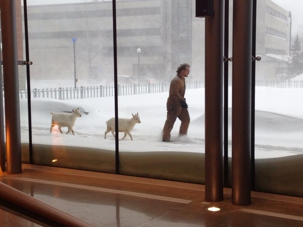

When an internal memo from Yahoo! leaked banning work from home, an uproar from remote-work supporter unleashed a heated debate. Following suit, Reddit abandoned its remote-work policy asking all employees to relocate to San Francisco under a year. Both companies cited that face-to-face interaction is a must for effective collaboration.
So, is remote work a step forwards or backwards?
Our three-person start-up decided to find out.
Before working remotely, Peter and I were commuting for hours per day to Serge's basement. Talk about productivity loss, the commute just had to stop!
At first we planned to move into a shared apartment and work on ParseHub from there. But before committing to that, we wanted to see if there were any thriftier options.
When the Canadian winter was around the corner, we started working remotely.

The Pros:
- The hours we save not commuting can be spent working or on extra sleep.
- We don’t have to wear headphones or earplugs to cancel out annoying office noise.
- We focus on what is most important - work - instead of focusing on what time we should get to the office or where we should eat together for lunch.
- Plants, 3 computer monitors or working from bed - we can get creative with our private office space.
- Doctor appointment? Rock climbing during lunch? No problem. We can work whenever, even all night if we wish to.
- Networking, getting involved in new communities, enjoying different cities - the perks of being location-free and having the ability to live anywhere.
- We are no longer constrained to Toronto to find talent. The world is our hiring ground.
Did I mention we now don’t have to put up with the Canadian winter?
Or be like this guy trekking for hours in the snow to get to work.

^ That is my friend from university that adopted pet goats from his uncle's farm and walked them around campus.
The Doubts:
- Remote work is not a complete substitute for in-person, human interaction. Being alone all the time can cause “cabin fever” or a sense of isolation.
- Will we create the right process for remote work and communicate just as much as we do face-to-face?
- Will we be just as motivated separately as we are working in-person?
- We are a start-up and making a commitment to work remotely will no-doubt have an impact on our company culture going forward. Will it be positive or detrimental?
- Will we work too much and burn out or will we work too little?
- Will we have limited access to expert advice because we are not part of a co-working start-up community?
Here are some of the things we put in place to make it work.
Structure
Daily 10:00 am stand-ups with the entire team. Daily 20 minute meetings are essential to our team. We use this time to update each other on what we did the previous day, what we are working on today and any issues that we are having. Stand-ups give us a chance to stay up to date and on track as a team.
Bi-weekly planning and strategy meetings. Every other Tuesday at 6:00 pm we get together to brainstorm and plan the tasks we need to get done for the next two weeks. Questions that we didn’t have time to answer during our daily stand-ups get discussed here.
In-person fun get-togethers. Face to face meetings are still important. Now that we are not together all the time we can plan to meet over fun adventures, like skiing or rock climbing trips.
Tools
Asana for project management. We use it to plan out and log all of our to-do tasks. We also track our performance as a team based on how many tasks we finish every two weeks.
Git and Gitlab for version control and code reviews. Almost everything we do is reviewed by somebody else on the team through Gitlab, even this blog post. It’s absolutely essential to our workflow.
Hangouts and Skype to talk to each other or to our customers. The screenshare feature lets us quickly help a person on the other end when there's a problem.
Google Apps for Business creates a central hub for all of our work. It's nice to have one consistent system for all of our communication - email, chat, files, calendar, etc.
Culture
Embrace balance and flexibility. The best perk of working remotely is setting your own hours. However, this can cause your team to work too little or too much. As a small team, we still support each other in the hours we choose to work. Some of us finish more work in the evening and late at night; others prefer to work in the morning. We embrace flexibility in our schedule as long as customer issues are being resolved quickly.
Encourage trust and accountability. Working remote, you don't have a sense of what people are doing every moment of the day. You have to trust each other to figure out what needs to be done and how. At the same time, each team member is held responsible for the results they produce. They make an explicit "promise" during each standup of what they will accomplish during the day.
Talk often. We are still working on our communication. We remind each other to talk about things outside of work. Working remotely, there are fewer opportunities for those spontaneous conversations that start by occupying the same space.
Proactively ask for help. It’s easy to think that your team is super busy with their own work and to be cautions about distracting them. However, asking for help when you're stuck (after thinking about the problem for 10 minutes) helps solve issues faster, leading to a better workflow.
Want to learn more about working remotely? Check out these resources:
- How to successfully run a remote team by Ryan Carson, founder of Treehouse
- 14 ways our remote team stays sane working from home by Alex Turnbull, founder of GrooveHQ
- Cabin fever and how to get over it working remotely by David Hansson, co-founder of 37signals
- How to manage a remote team by Wade Foster, co-founder of Zapier
- 50 resources to help you optimize your startup for remote working
Have an experience working part of or managing a remote team? Share in the comments!